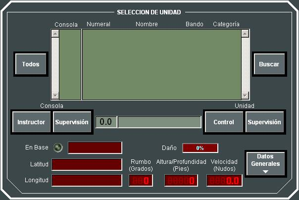

Control de Unidades y Alumnos
Pulsando en el botón Unidad de los Indicadores Generales de la Pantalla de Control, el Instructor puede acceder al siguiente diálogo para cambiar de modo de operación.

En esta ventana se muestra una lista de todas las unidades que forman parte del Ejercicio en Ejecución en la que se muestra el Numeral, Nombre, Bando y Categoría de cada una. A la izquierda de esta lista se muestra la lista de consolas que tienen unidades asignadas en el Ejercicio.
Seleccionando una Consola, en la lista de unidades se mostrarán sólo las unidades asignadas a dicha consola. Pulsando el botón Todas, se volverán a incluir todas la unidades en la lista.
Cuando se selecciona una unidad en la lista, se pone el Hook sobre dicha unidad en la Pantalla Táctica, y pulsando Buscar, se centra la presentación táctica en dicha unidad.
La funcionalidad principal de esta ventana es la de seleccionar el modo de operación del Instructor, para lo cual dispone de los siguientes botones:
Descripción de los modos en los que puede operar el Instructor:
Modo de Control de Ejercicio: En este modo el instructor observa la situación táctica global y puede realizar funciones de control del ejercicio como iniciarlo, pararlo, cambiar su velocidad, consultar datos generales de las unidades y del escenario, modificar y replicar unidades, crear falsos ecos, consultar informes, asignar daños, etc. En este modo la Pantalla Táctica presenta la Situación Táctica general del Ejercicio, y la Pantalla de Control del instructor presenta únicamente los Indicadores Generales.
Modo de Control de Unidad: En este modo el instructor pasa a participar en el ejercicio como un alumno más, asignado a dicha unidad, aunque mantiene la capacidad para ejercer todas las funciones de control del ejercicio ya mencionadas. Este modo es de utilidad para el gobierno de unidades no asignadas a alumnos y para la supervisión en detalle del estado de una unidad en particular. En este modo la Pantalla Táctica presenta la Situación Táctica correspondiente a la unidad, y la Pantalla de Control es idéntica a la de la Consola de Alumno.
Nota: Si el instructor realiza Control de Unidad de Ambientación (ver Anexos – Definiciones), la Pantalla de Control no incluirá ni los Paneles Resumen de Planes y Armas, ni información de los sensores pasivos de dicha unidad.
Modo de Supervisión de Unidad: Este modo es similar al anterior, pero el Instructor no tiene capacidad para controlar la unidad, sino sólo monitorizar su estado. En este modo la Pantalla Táctica presenta la Situación Táctica correspondiente a la unidad, y la Pantalla de Control es idéntica a la de la Consola de Alumno, pero no puede actuar sobre ella.
Modo de Supervisión de Consola: En este modo el Instructor puede supervisar las acciones realizadas por un Alumno concreto. En este caso la Pantalla Táctica muestra exactamente lo mismo que la Pantalla Táctica de la consola supervisada, y la Pantalla de Control del instructor presenta únicamente los Indicadores Generales.
En la parte inferior de la ventana se muestra un resumen de los datos de la unidad seleccionada, y pulsando el botón Datos Generales, se muestra la ventana de Datos Generales de la unidad correspondiente (ver apartado Datos Generales de Unidades).